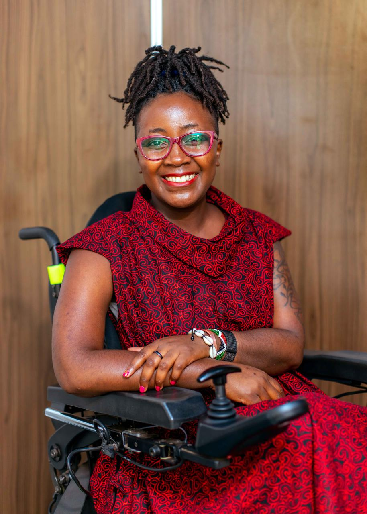
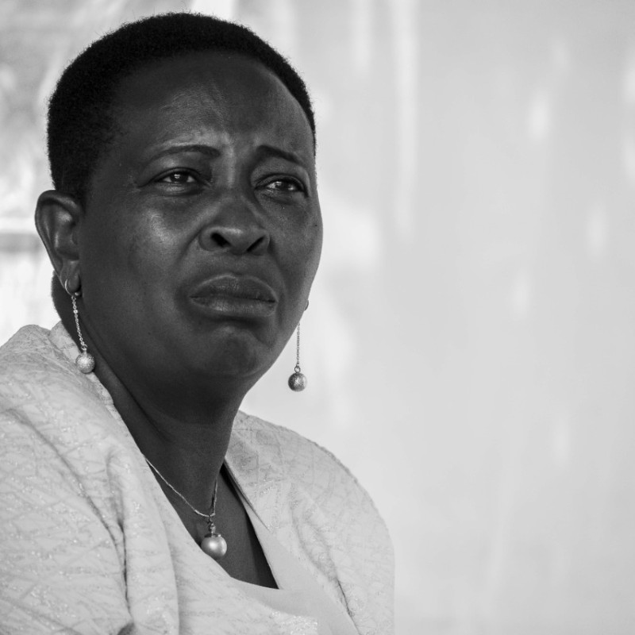

Zaidi ya Misuli Resource Centre was formally registered in 2025 in Kenya as an umbrella organization dedicated to supporting individuals and families affected by muscular dystrophy and other disabilities.
The journey began in 2013 when our founder started an informal peer support group. Today, Zaidi ya Misuli serves as the lead organization, umbrella-ing various specialized support initiatives including the Muscular Dystrophy Society Kenya (MDSK) Support Group, Relationships Support Group, and Carers Support Group.
Grounded in Disability Justice Principles: Interdependence, Collective Liberation, and Wholeness.
Our leadership structure is designed as a metric system, focusing on roles and responsibilities that transcends individuals to ensure institutional longevity.

Founder & Executive Director
Our Story
Our Founder, Faith started raising awareness on muscular dystrophy in 2013 through an informal peer support group (Muscular Dystrophy Society Kenya) to connect families and loved ones.
Zaidi ya Misuli Resource Centre, registered in 2025, works to respond to gaps in knowledge around muscular dystrophy and other disabilities among decision makers and stakeholders in different sectors.
Zaidi ya Misuli is grounded in Disability Justice Principles: Interdependence, Collective Liberation and Wholeness.

Executive Director
Operations & Excellence
Margaret brings a wealth of experience and a passion for operational excellence to her role.
She is responsible for overseeing the organisation's day-to-day operations, ensuring efficient resource allocation, and managing internal teams.
Her leadership is essential in maintaining a productive work environment, implementing effective policies, and driving continuous improvement across all pillars of Zaidi ya Misuli.